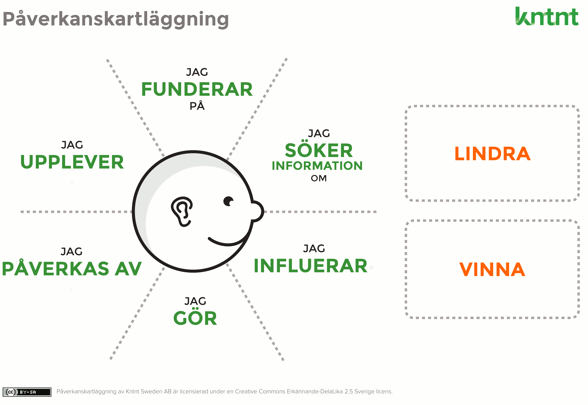

Mållgruppsanalys
Mållgruppsanalys är något man ska tänka på när man gör en hemsida. Vilken målgrupp kommer just att vara inne på hemsidan?. Om det är den yngre målgruppen så kanske man inte ska skriva med så formela ord utan mer enkla ord. Är det en äldre målgrupp så kan man skriva med lite svårare och mer formela ord.
Kravspecifikation
I en kravspecifikation så ska den vara enkelt att kunna hitta alla saker som ska vara med i en hemsida.
Exempel på mätbara krav
Ett exempel på mätbara krav kan vara ifall språket på hemsidan är enkelt att läsa eller ifall det finns många fel eller något saknas.